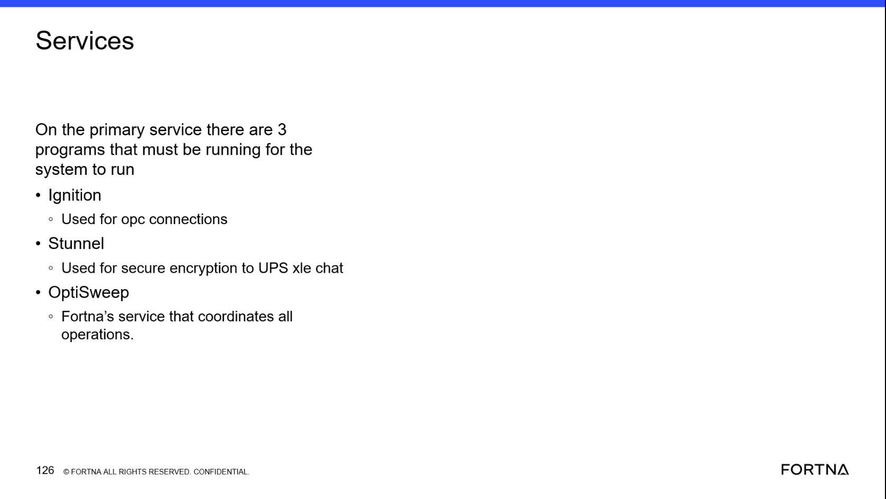

| Procedure ID | proc_check_windows_service_state_and_logs_gateway_unavailable_v1 |
|---|---|
| Title | Check Windows Service State and Logs When the OptiSweep Gateway Is Unavailable |
| Procedure Type | diagnostic |
| Primary Role | L2_support |
| Support Safe | Yes |
| Capability Tags | wcs_service_health |
| Access Surface | event_viewer |
| Audience Roles | L2_support |
| Failure Pattern Tags | service_crash_or_restart |
| Validation Status | needs_sme_review |
| Merge Status | source_finalized |
Use Windows Event Viewer / services to inspect the relevant OptiSweep-related service, determine whether it is running or stopped, review available service or Event Viewer logs for crash or inactive-period evidence, and correlate the service state with gateway availability.
Use this Windows Event Viewer / services diagnostic when the OptiSweep gateway is unavailable, does not open, or does not appear to be running, and a stopped service or service crash is suspected.


Responsible role: L2_support
Instruction:
In the Windows Event Viewer / services surface, open Windows Services MMC and inspect the relevant OptiSweep-related service. The source identifies OptiSweep as a service involved in coordinating system operation; it also identifies Ignition and Stunnel as primary services used by the system.
Expected result:
The relevant service entry is visible with an observable status such as Running or a stopped/inactive state.
Stop or Escalate If:
Responsible role: L2_support
Instruction:
In Windows Services MMC, record whether the relevant OptiSweep-related service is Running, stopped, or otherwise inactive. Do not restart or reconfigure the service as part of this diagnostic.
Expected result:
The current service state is explicitly identified and can be compared with the reported gateway condition.
Stop or Escalate If:
Responsible role: L2_support
Instruction:
Use Windows Event Viewer / services to review the available Windows service logs or Event Viewer entries for the relevant service and the reported outage period. Look for observable evidence of a crash, restart, or period in which service activity was absent.
Expected result:
Available log entries either correlate the outage with a service crash, restart, or inactive interval, or show that the available logs do not explain the outage.
Stop or Escalate If:
Responsible role: L2_support
Instruction:
Confirm the current gateway condition while the relevant service state is known. Compare whether the gateway opens or runs when the service is Running with the reported condition when the service is stopped or inactive. Do not perform a service restart as part of this step.
Expected result:
The service state and gateway condition are correlated as either consistent or unexplained.
Stop or Escalate If: